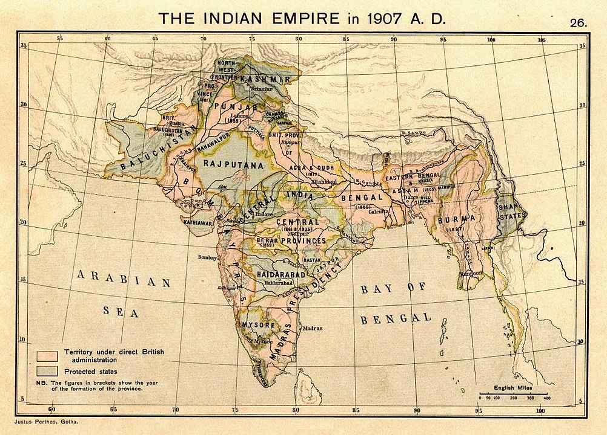

| Province | Area (km2) |
Population in millions (1901) |
Chief Administrator | Map |
|---|---|---|---|---|
| Major Provinces |  | |||
| Assam Province | 130000 | 6 | Chief Commisioner | |
| Bengal Presidency[b] | 390000 | 79 | Lieutent Governer | |
| Bombay Presidency | 320000 | 19 | Governer in Council | |
| Central Provinces and Berar | 270000 | 13 | Chief Commisioner | |
| Madras Presidency | 370000 | 38 | Governer in Council | |
| Punjab[b] | 250000 | 20 | Lieutent Governer | |
| United Province | 280000 | 48 | Lieutent Governer | |
| Minor Provinces | ||||
| Ajmer-Merwar | 7000 | 477 | ex Officio Chief Commisioner | |
| Andaman and Nicobar Islands | 78000 | 25 | Chief Commisioner | |
| Coorg Province | 4100 | 181 | ex Officio Chief Commisioner | |